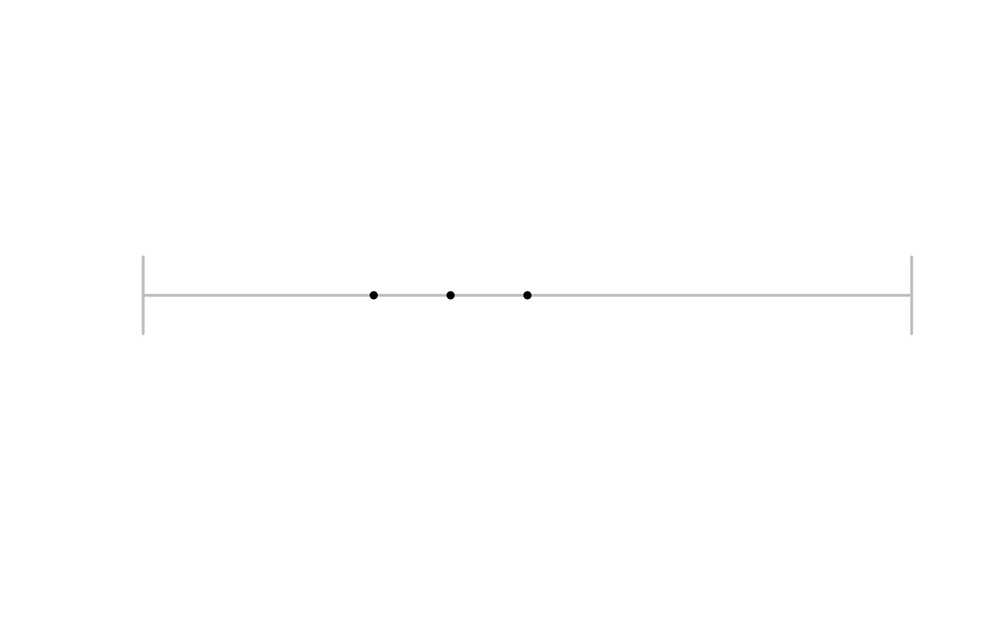
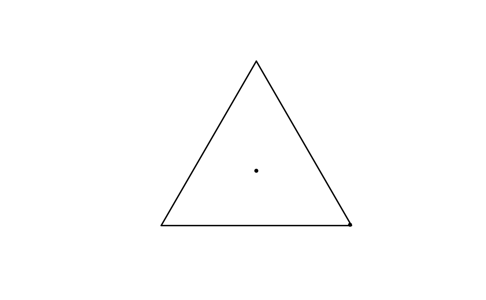
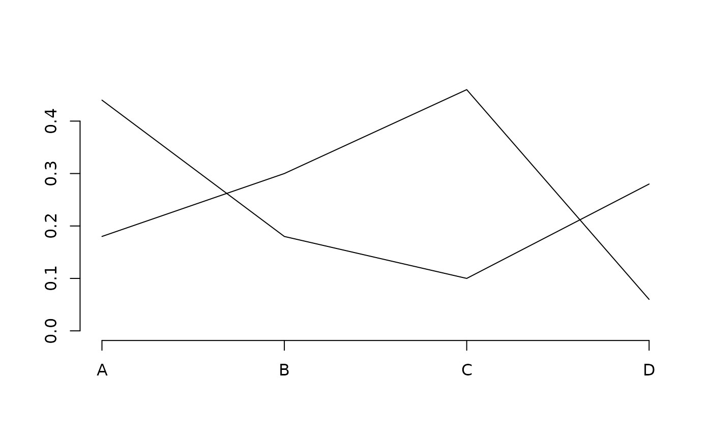
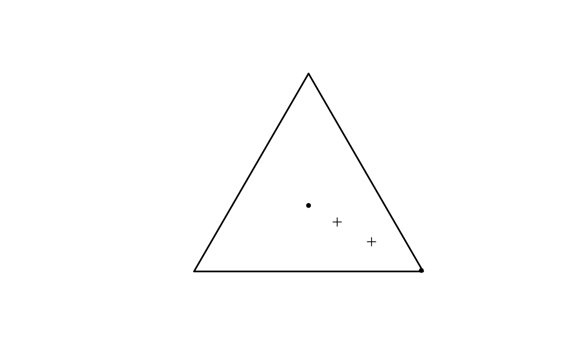
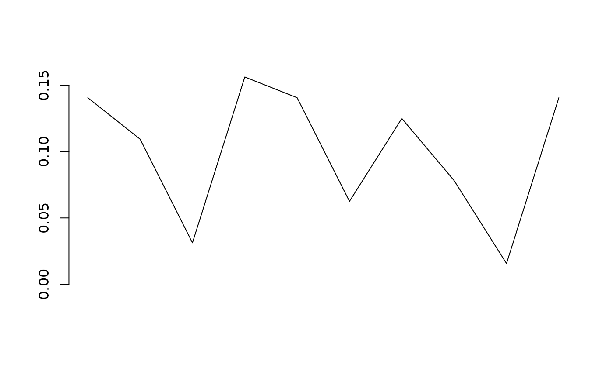
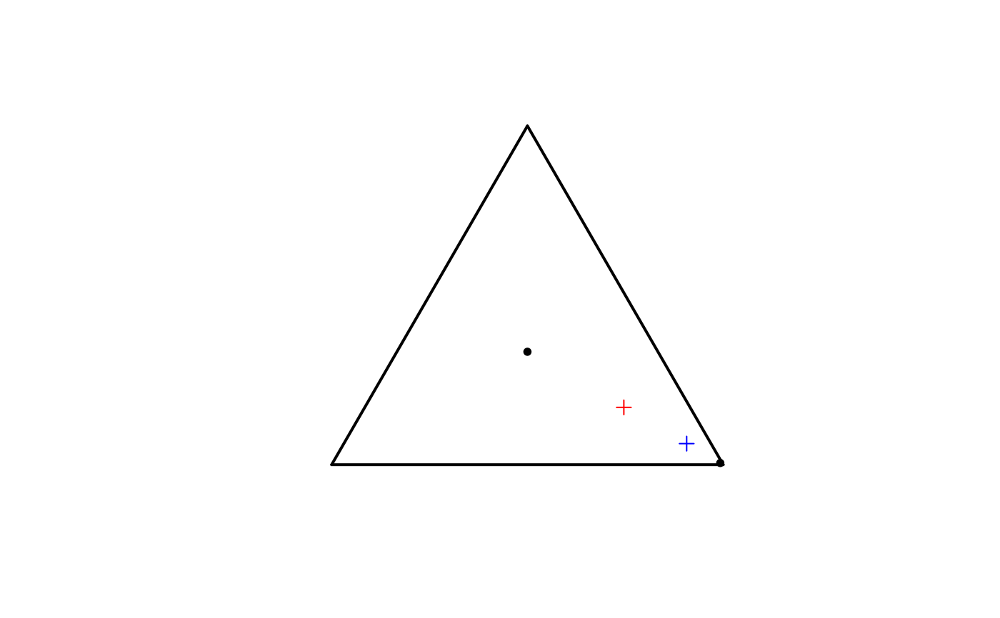

Methods plot() and points() for objects of classes igccatdistn and igcmatcatdistn.
The type of the chart produced depends on the size of distributions to be drawn.
More precisely, two-state distributions are drawn as points on a unit segment,
three-state distributions are drawn as points in the equilateral triangle.
Distributions with more than three states are drawn as polylines.
Arguments
- x
An object of class igcmatcatdistn, i.e., a matrice with positive entries and rows sum to 1.
- y
NULL. Argument present only for compatibility with generic function plot.
- add
Logical. Indicates whether the normalized categorical distributions should be drawn in a new chart (FALSE) or should be added to the active chart (TRUE).
- pch
An integer value specifying the shape point
- ...
Further arguments to be passed to default methods for
plot()andpoints(); see?parfor details.
Examples
# Two-state categorical distributions plot
u <- c(0.5, 0.5)
p1 <- c(0.3, 0.7)
p2 <- c(0.4, 0.6)
x <- igcmatcatdistn(matrix(c(u, p1, p2),
nrow = 3, ncol = 2, byrow = TRUE))
plot(x)

# Three-state categorical distributions plot
u <- rep(1/3, 3)
prob <- c(0.99, 0.005, 0.005)
x <- matrix(c(u, prob),
nrow = 2, ncol =3, byrow = TRUE)
x <- igcmatcatdistn(x)
plot(x)

# Many-state categorical distributions plot
set.seed(745)
var1 <- factor(sample(x = LETTERS[1:4], size = 50L,
replace = TRUE, prob = c(0.2, 0.3, 0.4, 0.1)),
levels = LETTERS[1:4], ordered = TRUE)
p1 <- table(var1)
var2 <- factor(sample(x = LETTERS[1:4], size = 50L,
replace = TRUE, prob = c(0.4, 0.2, 0.1, 0.3)),
levels = LETTERS[1:4], ordered = TRUE)
p2 <- table(var2)
p <- igcmatcatdistn(matrix(c(p1/sum(p1), p2/sum(p2)),
nrow = 2, ncol = 4, byrow = TRUE))
plot(p)
axis(side = 1, at = 1:4, labels = LETTERS[1:4])

u <- rep(1/3, 3)
prob <- c(0.99, 0.005, 0.005)
x <- matrix(c(u, prob),
nrow = 2, ncol =3, byrow = TRUE)
x <- igcmatcatdistn(x)
plot(x)
y <- matrix(c(0.7, 0.15, 0.15,
0.5, 0.25, 0.25),
nrow = 2, ncol = 3, byrow = TRUE)
y <- igcmatcatdistn(y)
points(y, pch = 3)

p <- sample(1:10, size = 10L, replace = TRUE)
p <- igccatdistn(p/sum(p))
plot(p)

u <- rep(1/3, 3)
prob <- c(0.99, 0.005, 0.005)
x <- matrix(c(u, prob),
nrow = 2, ncol =3, byrow = TRUE)
x <- igcmatcatdistn(x)
plot(x)
acent <- arithcent(p = x)
acent <- igccatdistn(acent)
gcent <- geomcent(p = x)
gcent <- igccatdistn(gcent/sum(gcent))
points(x = acent, pch = 3, col = "red")
points(x = gcent, pch = 3, col = "blue")
